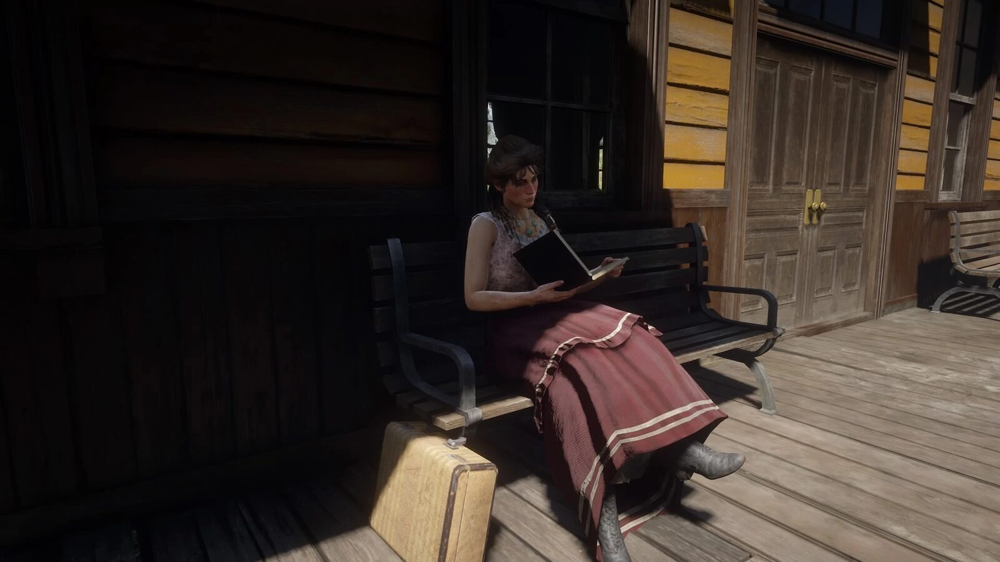
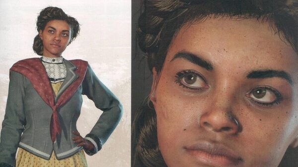
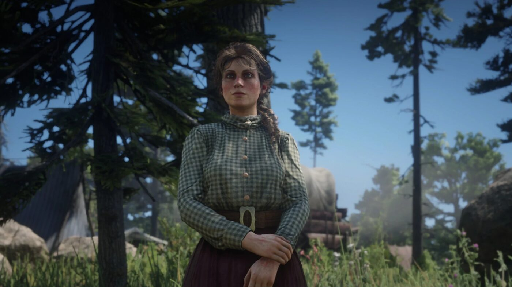

Personnage · Gang Van der Linde
Mary-Beth Gaskill
Mary-Beth Gaskill est une jeune pickpocket du gang Van der Linde dans Red Dead Redemption 2, qui rêve de devenir romancière. Rockstar la décrit comme gentille et bienveillante, ce qui ferait d'elle "la criminelle idéale".
Elle survit au gang et, en 1907, publie des romans sentimentaux sous le nom de plume de Leslie Dupont.
- Affiliation
- Gang Van der Linde
- Rôle
- Pickpocket et voleuse
- Plus tard
- Romancière (nom de plume Leslie Dupont)
- Statut
- Vivante en 1907
- Voix
- Samantha Strelitz
- Jeux
- Red Dead Redemption 2
Biographie
Origines
D'après le guide officiel, la mère de Mary-Beth meurt du typhus. Placée dans un orphelinat, elle s'enfuit et vit d'expédients. Elle croise la route du gang en fuyant des hommes qu'elle avait volés. Elle aime lire et écrire depuis l'enfance.
Au sein du gang
Lors de la virée à Valentine du chapitre 2, Mary-Beth donne à Arthur un tuyau sur un train de voyageurs fortunés qui traverse les Scarlett Meadows. Ce tuyau mène à l'attaque du train par le gang, à laquelle elle ne participe pas. Au chapitre 3, elle aide Sean à dévaliser une diligence en feignant l'amnésie pour distraire les gardes.
Au chapitre 6, Arthur peut lui confier qu'il est atteint de tuberculose ; elle l'encourage à faire en sorte que le temps qui lui reste compte. Elle quitte ensuite le gang à Beaver Hollow. Au début de "Our Best Selves", Dutch la cite, avec Pearson et Uncle, parmi ceux qui sont partis, et les traite de lâches.
1907
Dans l'épilogue, John Marston peut la croiser sur le quai de la gare de Valentine. Elle écrit désormais des romans sentimentaux sous le nom de Leslie Dupont, lui offre un exemplaire de "The Lady of the Manor" et monte dans son train. Un journal du jeu présente ce livre comme le quatrième de Dupont. Une lettre de Tilly confirme que les deux femmes sont restées proches.
Relations

Arthur Morgan
Lui confie qu'il va mourir.

Tilly Jackson
Son amie ; elles restent en contact après le gang.

Sean MacGuire
Dévalise une diligence avec elle au chapitre 3.

Karen Jones
L'accompagne à Valentine avec Tilly au chapitre 2.
Conception et interprétation
Mary-Beth est interprétée par Samantha Strelitz, originaire de Long Beach et installée à New York, qui assure la voix et la capture de mouvement.
Dans l'entretien croisé de GamesRadar avec les actrices du gang (mars 2019), elle retient la scène où Arthur lui confie qu'il va mourir, une scène qui la bouleverse encore à chaque fois, dit-elle, par son innocence.
Accueil
Dans un classement des membres du gang publié en décembre 2018, Game Informer place Mary-Beth en 13e position. Le magazine salue la douceur et la franchise de ses échanges avec Arthur, et voit dans sa scène d'épilogue une éclaircie bienvenue dans un récit sombre, tout en regrettant son absence des missions principales.
Galerie
